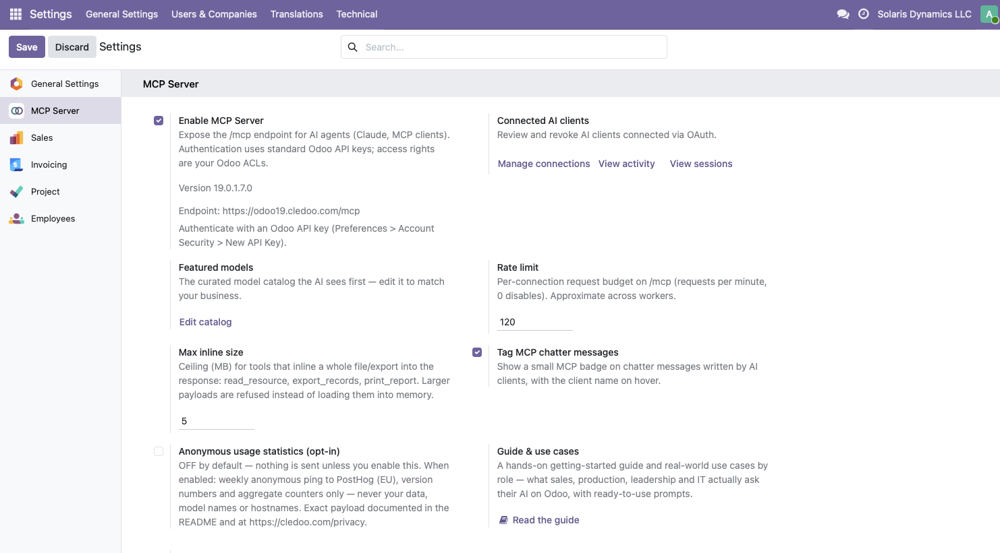
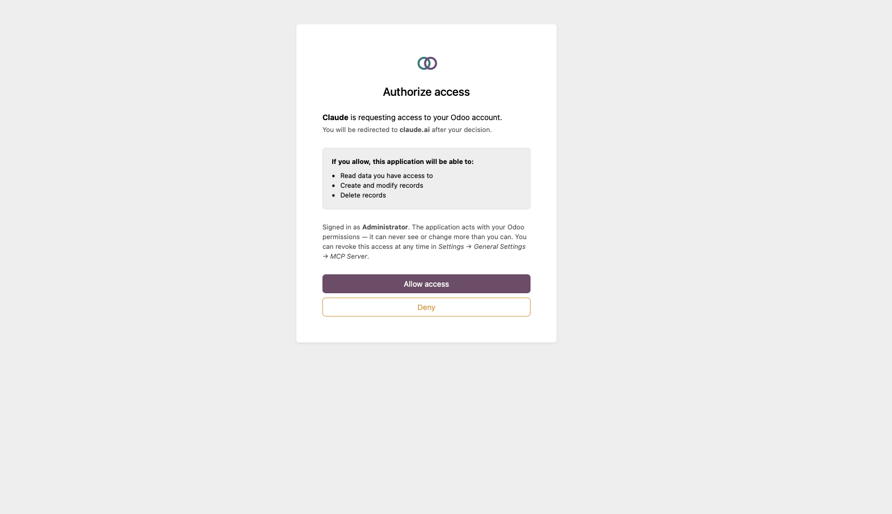

THREE STEPS, AND YOU'RE SET
Connected in 5 minutes.
STEP 1
Install the module
From the Odoo Apps Store, on your on-premise or Odoo.sh instance — use the branch matching your series, 18.0 or 19.0.
STEP 2
Enable MCP
One switch in Settings > General Settings > MCP Server. Your instance's /mcp endpoint is ready.
STEP 3
Connect Claude
Paste the URL in claude.ai, log into Odoo, approve. Any other client connects with an Odoo API key as a bearer token.
STEP 1 IN DETAIL — INSTALLING THE ZIP
- Unzip the archive — you get a
cledoo_mcp_full/folder. - Copy it into an addons directory of your server (any path listed in
addons_pathinodoo.conf). - Restart the Odoo service.
- Enable developer mode, then Apps > Update Apps List.
- Search for Cledoo MCP and click Install.
On Odoo.sh, commit the cledoo_mcp_full/ folder to your linked GitHub repository instead — the next build installs it.

Step 2 — one toggle, one endpoint URL, everything managed from Settings.

Step 3 — paste your /mcp URL as a connector in claude.ai.

Log into Odoo, approve — the AI acts with your Odoo permissions, never more.

Done — Claude, live on your Odoo data.